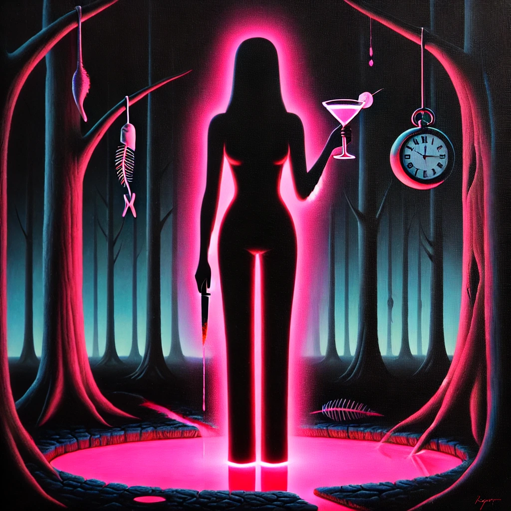

칵테일, 러브, 좀비
목차
작가
조예은
출판일
2020년 4월 14일
감상평에 대한 AI그림
독특한 소재들로 인간관계와 사회 구조 속에서 발생하는 억압, 상처, 그리고 치유의 과정을 표현해낸 게 정말 인상 깊었던 책이다.
총 네 가지 이야기로 구성된 스릴러 단편소설집인데, 큰 공포 요소가 있던 것도 아니고, 그저 건조하면서도 감성적인 문체로 계속해서 긴장감을 갖게 만드는 게 대단하다고 느꼈다.
소재 사용 면에 있어서도 정말 새로웠던 소설이다. 개인적으로 마지막 단편이 정말 기억에 남는다.

감상평에 대한 AI평가
이 감상평은 책의 특징을 명확하게 짚고 있다.
✨ 독특한 소재와 인간관계 및 사회 구조의 표현이 인상적이었다는 점을 강조하며,
✨ 스릴러적 요소가 공포보다 문체를 통해 긴장감을 조성한다는 분석이 설득력 있다.
✨ 개인적인 인상을 잘 담아내어 풍부한 감상평을 만들었다.